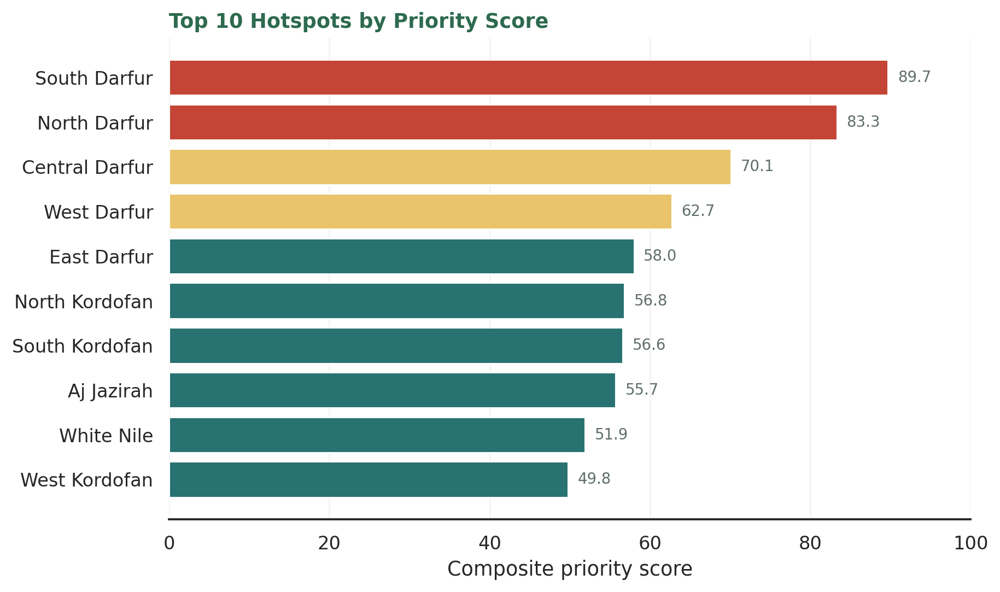
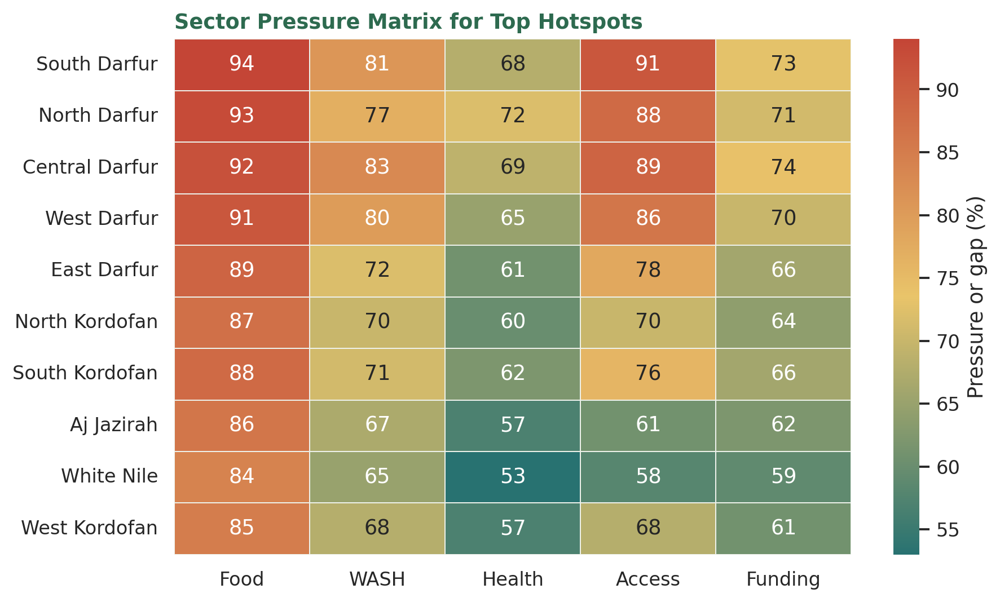
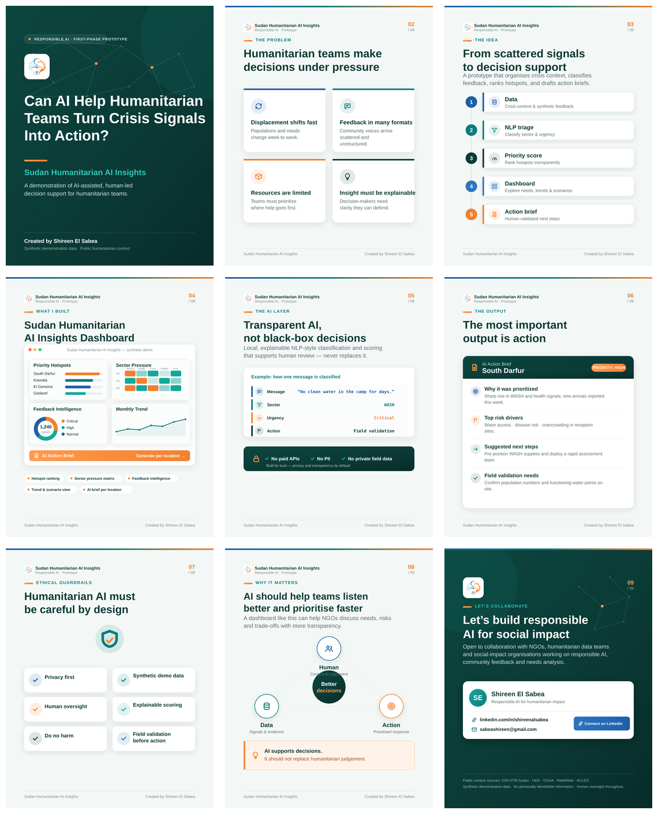

Priority and Needs
Ranks states with a transparent composite score using displacement volume, sector gaps, access constraints, protection alerts, and funding pressure.
Responsible AI portfolio project
A complete public project showing how humanitarian data, synthetic community feedback, transparent scoring, and decision-support briefs can help teams discuss priorities with more structure and accountability.
Created by Shireen El Sabea.
Interactive dashboard
The Streamlit app is the interactive dashboard in the repository. Vercel hosts this public project hub, while Streamlit Community Cloud is the free host for the live Python app.
Ranks states with a transparent composite score using displacement volume, sector gaps, access constraints, protection alerts, and funding pressure.
Classifies synthetic community feedback with a rule-based local text triage layer for sector, urgency, sentiment, and matched terms.
Generates a downloadable hotspot brief with drivers, validation steps, recommended review actions, and ethical-use notes.


Whole project package
Everything needed for a strong GitHub repository and LinkedIn case-study post is included: source code, static project hub, carousel, technical report, and deployment notes.
Streamlit dashboard source code with local CSV data, Plotly visuals, and responsible demo guardrails.
Open GitHub RepoPDF dossier explaining the case-study logic, workflow, visuals, ethics notes, and public context anchors.
Download ReportA polished document carousel that introduces the problem, the AI workflow, and Shireen's collaboration CTA.
Download CarouselLinkedIn-ready media
The carousel is designed for a document post. It gives the project a polished visual story before people open the dashboard or report.

Responsible use
The project is framed as a public demonstration. It is not live operational intelligence and should not be used for real allocation decisions without verified field data.
State-level rows and feedback examples are synthetic, calibrated around public humanitarian reporting themes.
The priority score is explained through visible drivers rather than hidden automation.
Outputs are designed to support field review, coordination, and planning, not replace judgment.
Useful sources for case-study framing:
GitHub repository
Recommended repository name: shireen-sudan-humanitarian-ai-insights. Keep it public so Vercel and Streamlit Community Cloud can deploy it for free.
git remote add origin https://github.com/Shireenelsabea/shireen-sudan-humanitarian-ai-insights.git
git push -u origin main